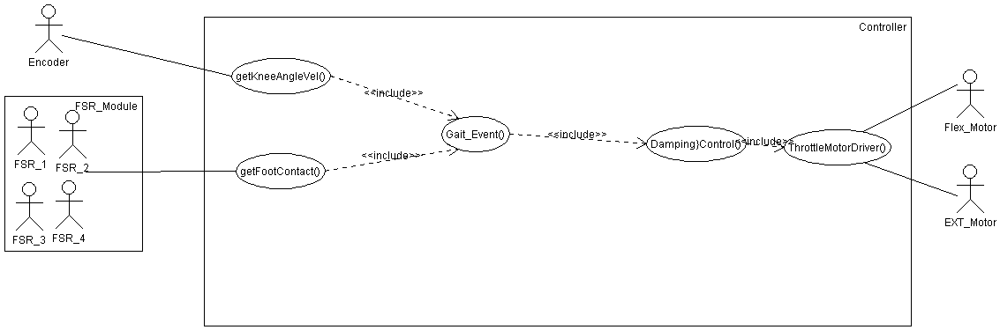
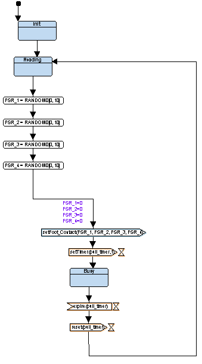
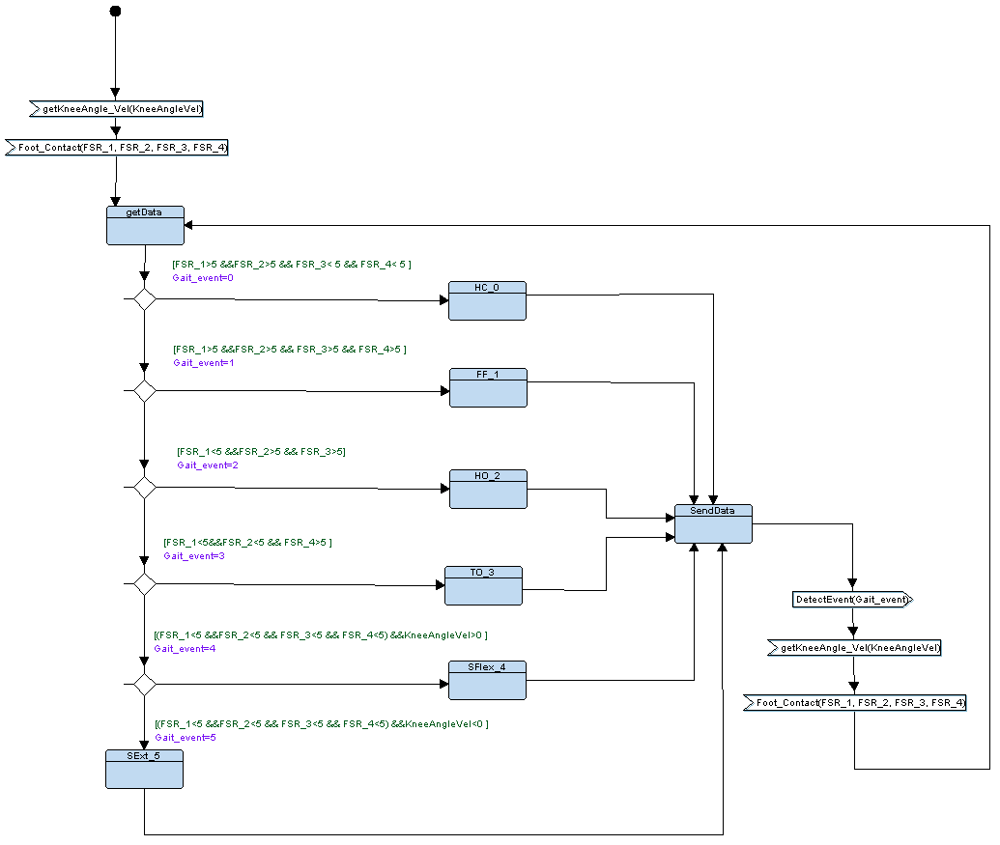

TTool project:
MPKSys.xml
Requirements
AVATARRD
Analysis
UseCaseDiagram 0

ActivityDiagram 0
MyScenario0

UseCaseDiagram 1
Design
Block Diagram
Behavior of Block: MainController

Behavior of Block: FSRDriver

Behavior of Block: ThrottleMotorDrivers
Behavior of Block: EncoderDriver
Behavior of Block: KneeState

Behavior of Block: DampingCalculation
Behavior of Block: Valves_Angle